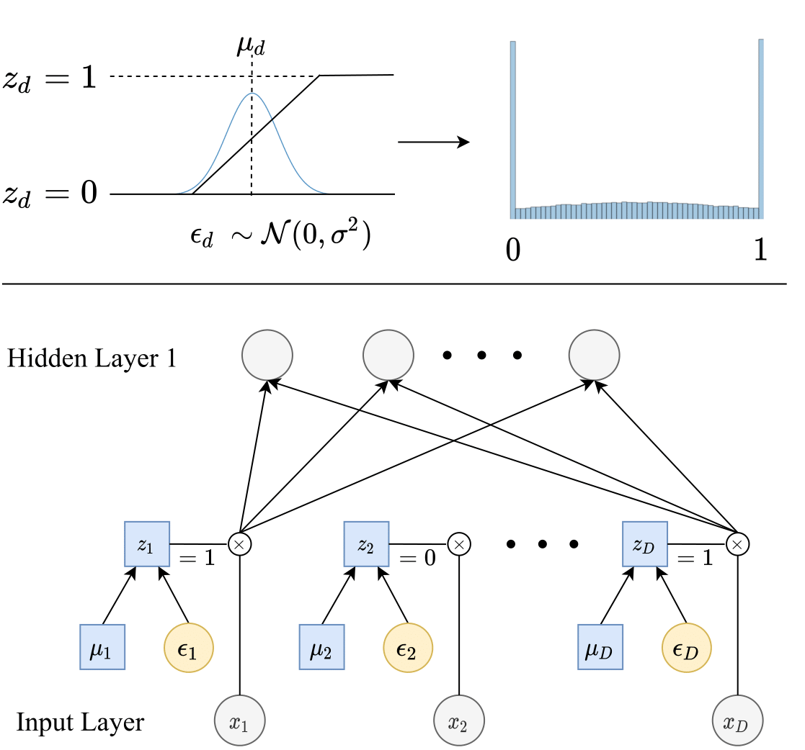

Feature Selection using Stochastic Gates (STG) is a method for feature selection in neural network estimation problems. The new procedure is based on probabilistic relaxation of the l0 norm of features, or the count of the number of selected features. The proposed framework simultaneously learns either a nonlinear regression or classification function while selecting a small subset of features.
|  |
|---|
| Top: Each stochastic gate z_d is drawn from the STG approximation of the Bernoulli distribution (shown as the blue histogram on the right). Specifically, z_d is obtained by applying the hard-sigmoid function to a mean-shifted Gaussian random variable. Bottom: The z_d stochastic gate is attached to the x_d input feature, where the trainable parameter µ_d controls the probability of the gate being active |
To install with pip, run the following command:
pip install --user stg
You can also clone the repository and install manually:
git clone
cd stg/python
python setup.py install --user
Once you install the library, you can import STG to create a model instance:
from stg import STG
model = STG(task_type='regression',input_dim=X_train.shape[1], output_dim=1, hidden_dims=[500, 50, 10], activation='tanh', optimizer='SGD', learning_rate=0.1, batch_size=X_train.shape[0], feature_selection=True, sigma=0.5, lam=0.1, random_state=1, device="cpu")
model.fit(X_train, y_train, nr_epochs=3000, valid_X=X_valid, valid_y=y_valid, print_interval=1000)
# Start training...
For more details, please see our Colab notebooks:
We thank Junchen Yang for his help to develop the R wrapper. Some of our codebase and its structure is inspired by https://github.com/vacancy/Jacinle.
If you find our library useful in your research, please consider citing us:
@incollection{icml2020_5085,
author = {Yamada, Yutaro and Lindenbaum, Ofir and Negahban, Sahand and Kluger, Yuval},
booktitle = {Proceedings of Machine Learning and Systems 2020},
pages = {8952--8963},
title = {Feature Selection using Stochastic Gates},
year = {2020}
}